| dplyr | tidyr | ggplot2 | lattice | tukeyedar |
|---|---|---|---|---|
| 1.1.4 | 1.3.1 | 3.5.2 | 0.22.7 | 0.5.0 |
21 Visualizing Explained and Unexplained Variation
In the previous chapter, we introduced the idea of modeling univariate data by fitting a group-specific mean and analyzing the residuals—the variation not explained by the model.
In this chapter, we take the next step: we assess how much of the total variability in the data is explained by the fitted model versus how much remains in the residuals.
This approach helps answer questions like: + Does a grouping variable meaningfully reduce uncertainty in our estimates? + Is the model capturing a substantial portion of the variation?
We’ll explore these questions through examples and simulations.
21.1 Introduction
An overarching goal in data analysis is to summarize data with mathematical expressions that effectively characterize its values. A basic example of such a summary is the overall mean. For instance, consider a dataset of 60 values (visualized in the following jitter plot). These values can be characterized by a mean, \(\mu\) of 11 units (depicted as a bisque color point in the plot) and the residuals, \(\epsilon\).
\[ y = \mu + \epsilon \]
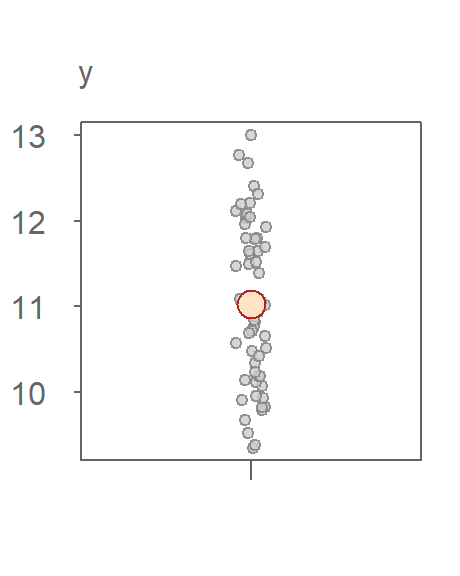
While the overall mean serves as an initial estimate for \(y\), it is accompanied by some degree of uncertainty. In this case, the variability spans approximately four units.
To refine our estimate of \(y\), we can incorporate additional information, such as the group to which each measurement belongs. This allows us to account for group-level differences and reduce the uncertainty in our estimate of \(y\).
\[ y = \mu_{group} + \epsilon \]
For example, dividing the measurements into three groups provides separate estimates of, \(\mu_{group}\) for each group.
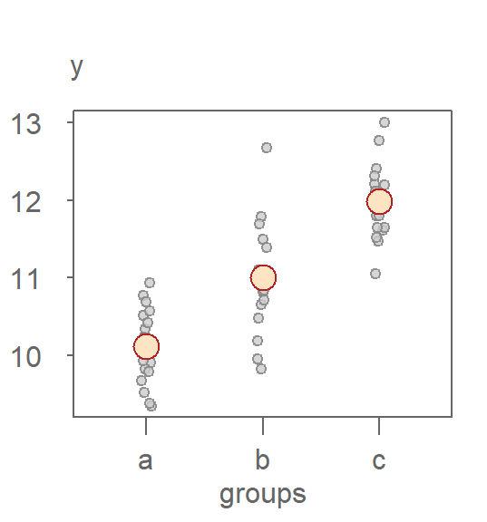
In this example, knowing the group membership of an observation produces three distinct estimates of \(y\) that range from about 10 to 12 units. This approach not only helps us hone in on a more precise measure of location, but it also reduces the uncertainty in our estimate of \(y\) by about two units–an improvement over the earlier model which relied on a single estimate for all observations.
A grouping variable’s usefulness in improving our estimate of \(y\) depends not only on its ability to provide distinct group-level estimates of the population mean but also on its potential to reduce the uncertainty surrounding those estimates. In the following jitter plot, we see an example where splitting the data into groups yields little improvement in the precision of our estimates compared to the simpler overall mean model:
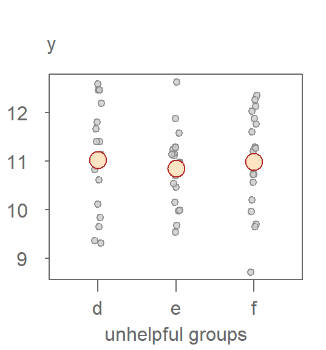
Here, the improvement in \(y\) estimates is modest because the uncertainty within each group (\(\epsilon\)) remains substantial. Each group exhibits a range of approximately four units, comparable to the range of uncertainty in the overall mean model.
21.2 Visualizing Model Fit: The Variability Decomposition Plot
Before diving into the more detailed residual-fit spread (rfs) plot, we begin with a simpler and more intuitive visualization: the variability decomposition (vd) plot.
The vd plot visually decomposes the model:
\[ y = \mu_{group} + \epsilon \]
into its two components: the fitted group means (\(\mu_{\text{group}}\)) and the residuals (\(\epsilon\)).
The vd plot provides a high-level summary of how much of the total variation in a response variable is explained by a grouping variable. It visually separates the data into:
Fitted values (e.g., group means), representing between-group variation
Residuals, representing within-group variation
Optionally, the original response distribution, for reference
A dot plot or a boxplot of the fitted values centered around the overall mean or median
A boxplot of the residuals
21.2.1 Scenario 1: Strong group effect
Let’s revisit the dataset with three well-separated groups (a, b, and c):
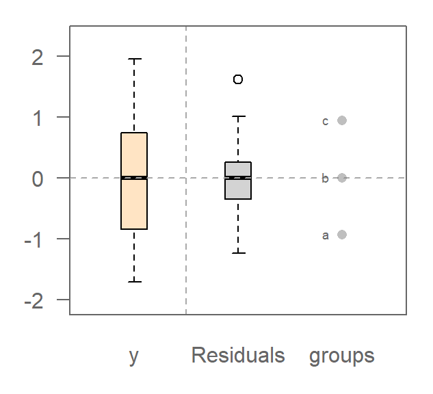
- The gray points represent the fitted group means, centered around the overall median.
- The light gray boxplot shows the residuals.
- The bisque-colored boxplot shows the spread of the original response variable centered around the batch median.
In this example, the fitted values span a wide range (about 2 units), while the residuals are relatively narrow. This suggests that the grouping variable explains a substantial portion of the variation in the data.
21.2.2 Scenario 2: Weak group effect
Now consider the dataset where the grouping variable (d, e, and f) has little explanatory power:
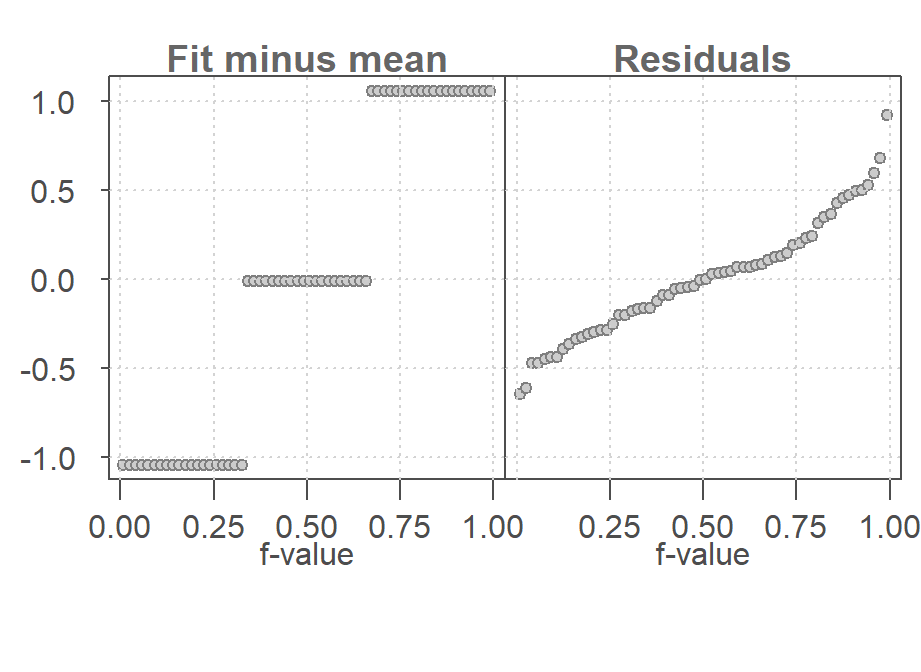
Here, the fitted values are tightly clustered, while the residuals span nearly the full range of the original data. This indicates that the grouping variable contributes little to explaining the variation in the response.
21.2.3 Interpreting vd plots
There is no strict cutoff for what constitutes a “good” or “poor” decomposition. Instead, interpretation lies on a continuum:
- A wide spread in fitted values relative to residuals suggests a strong group effect.
- A narrow spread in fitted values and wide residuals suggests a weak or negligible group effect.
The VD plot is especially useful as a first diagnostic before moving to more detailed tools like the RFS plot.
21.2.4 Generating a vd plot with eda_vd
The vd plot can be generated with the eda_vd function from the tukeyedar package. But first, we’ll generate the singer height data used in the previous chapters.
singer <- lattice::singerTo generate the vd plot, type:
eda_vd(singer, height, voice.part, label = TRUE, title = NULL)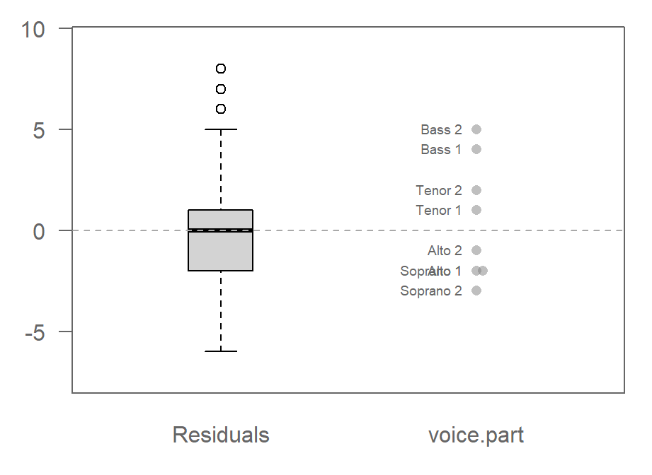
The label argument is optional and is used to label the points with group names.
You can add the boxplot of the original height distribution to the plot with the show.resp = TRUE argument.
eda_vd(singer, height, voice.part, label = TRUE, title = NULL, show.resp = TRUE)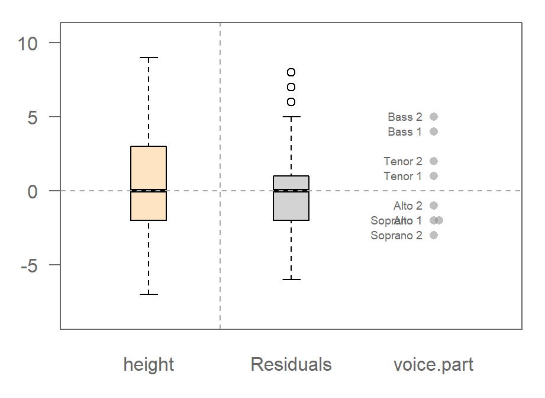
In the singer height data, the fitted group means span about 7–8 inches, while the residuals are much narrower. This indicates that voice part explains a meaningful portion of the variation in height.
21.3 Quantifying Fit: The Residual-Fit Spread Plot
While the variability decomposition plot provides a clear summary of explained vs. unexplained variation, the residual-fit spread (rfs) plot offers a more detailed, quantile-based comparison. This plot aligns the quantiles of the fitted values and residuals on a shared axis, allowing for a more nuanced assessment of model fit.
The rfs plot, introduced by William Cleveland, is constructed as follows:
- Fit a model \(\mu_{group}\), such as the mean or median, to each group in the data.
- Compute residuals by subtracting the fitted values from the original values (\(\epsilon_{group} = y_{group} - \mu_{group}\)).
- Center the fitted values (e.g., subtract the overall mean) to align both datasets around zero(\(\mu'_{group} = \mu_{group} - \mu_{overall}\)).
- Generate side-by-side quantile plots for the centered fitted values, \(\mu'_{group}\), and residuals \(\epsilon_{group}\).
While a residual distribution having consistent shape and spread across groups is not explicitly assumed in creating an rfs, it does ensure valid comparisons.
Using the dataset introduced earlier in this chapter, we first calculate the group means of 10, 11 and 12. The data are then split into two parts: the modeled means and the residuals. For instance, an observation \(y = 11.07\) (highlighted in green in the figure below) can be decomposed as follows:
\[ 11.07 = 12 - 0.93 \]
Here, 12 is the group mean, \(\mu_{C}\), and -0.93 is the residual value \(\epsilon_{i, C}\).
The decomposed values are plotted as side-by-side quantile plots: the fitted means on the left and the residuals on the right. To facilitate a direct comparison of spreads, the fitted values are re-centered around zero by subtracting the overall mean (\(\mu_{overall} = 11\)) from each fitted value (\(\mu_{group}\)). For the highlighted observation, this yields \(\mu'_{C} = \mu_{C} - \mu_{overall} = 12 - 11 = 1\)
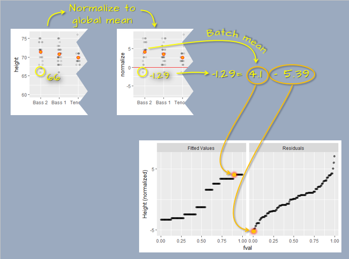
In the rfs plot, both spreads are shown on a shared y-axis, centered at zero. This alignment enables a straightforward comparison of variability between the fitted values and the residuals. In this example, the amount of variability captured by the fitted values (the means) is in the same order of magnitude as the variability that remains unexplained by the model (the residuals).
Given that the tails of the residual distribution can sometimes be more variable or influenced by a few extreme values, it’s best to focus the spread comparison in the rfs plot on the central bulk of the residuals, such as the range encompassing the inner 90% or 95% of the residuals. This approach provides a more stable comparison of the typical variability unexplained by the model against the variability captured by the fitted values.
21.3.1 Interpreting rfs plots: Two extremes
To build intuition for interpreting the residual-fit spread (rfs) plot, let’s revisit the two extreme cases presented earlier in this chapter.
21.3.1.1 Scenario 1: Strong group effect
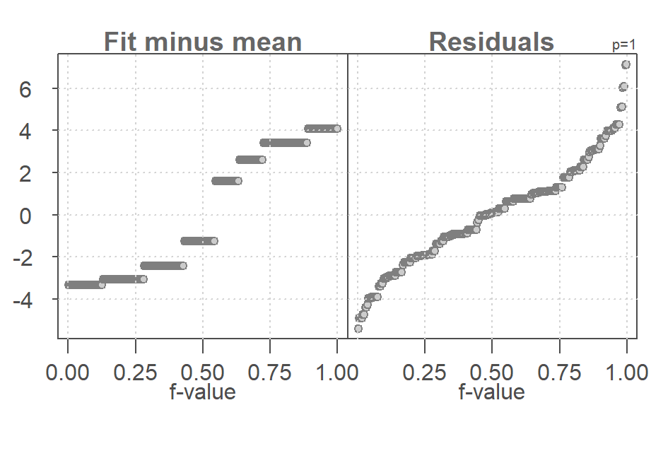
Here, the group means explain a substantial portion of the variability in \(y\). The spread in fitted group means covers 2 units, while approximately 95% of the residuals fall within a range of 1 unit–a much smaller spread. This indicates that the grouping variable can play a key role in explaining \(y\).
21.3.1.2 Scenario 2: Weak group effect
Now consider the opposite extreme, where the grouping variable is minimally effective at explaining \(y\).

In this scenario, the residuals dominate, and the grouping variable contributes little to improving our estimates of \(y\). The small spread in fitted values compared to the residuals indicates that the grouping variable has minimal impact. If we were to abandon the grouping variable and rely solely on the overall mean, the residual spread would remain nearly unchanged as shown in the following rfs plot.
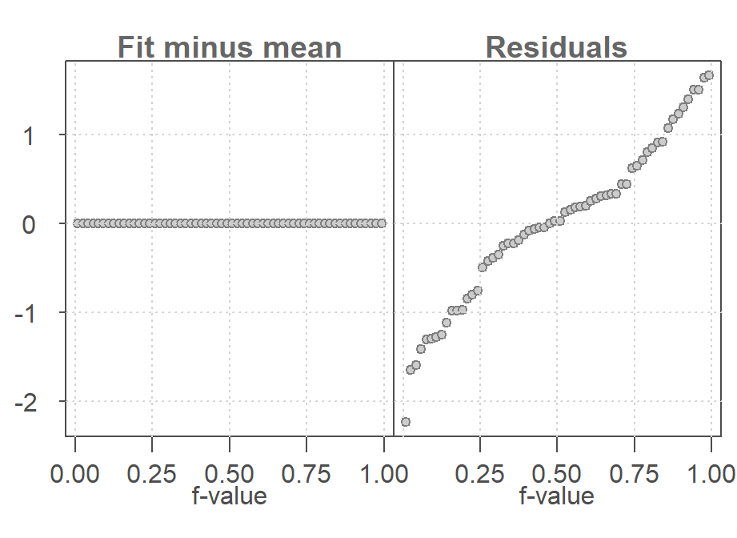
21.3.2 Generating an rfs plot with eda_rfs
The rfs plot can be generated with the eda_rfs function from the tukeyedar package. But first, we’ll generate the singer height data used in the previous chapters.
df <- lattice::singerThe rfs plot for the singer height data follows:
eda_rfs(df, height, voice.part)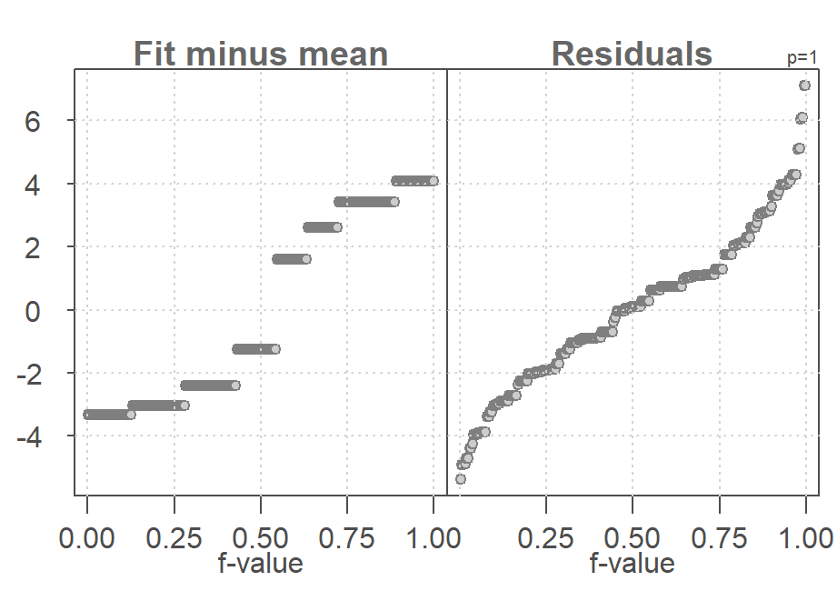
In addition to generating a plot, the function will output information about the spreads in the console. It compares the range of values associated with the mid 90% of the residuals to the spread of the fitted values.
The mid 90.0% of residuals covers about 7.98 units.
The fitted values cover a range of 7.42 units, or about 93.0% of the mid 90.0% of residuals.The reason the mid 90% of values is chosen is to prevent outliers, or extreme values, in the residuals from disproportionately exaggerating the spread in residuals. For example, you’ll note several extreme residual values above 5 inches in the working example.
To help visualize the inner 90% of values, you can add the q=TRUE argument to the function. This option generates a shaded box highlighting the inner 90% of residual values and its matching range in the Fit minus mean plot.
eda_rfs(singer, height, voice.part, q = TRUE)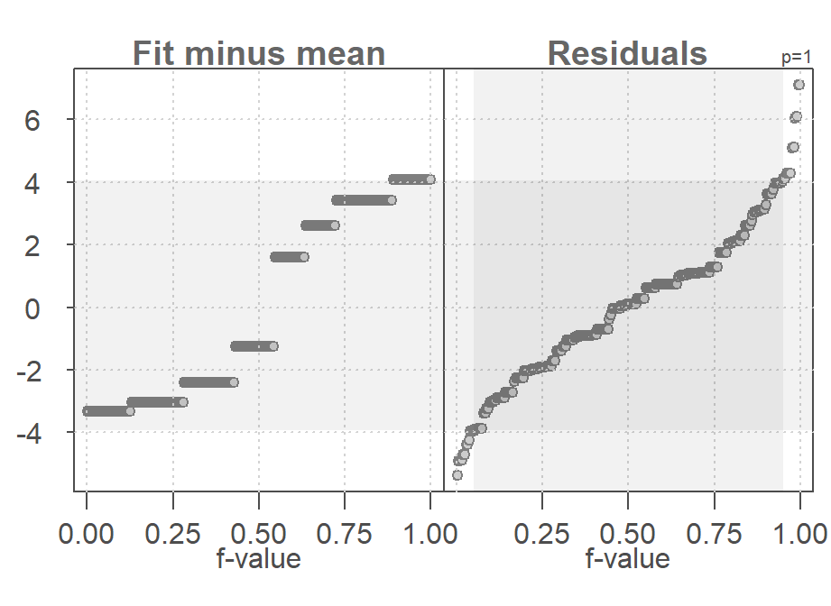
The spread of the fitted heights (across each voice part) is not insignificant compared to the spread of the combined residuals. The spread in the fitted means spans the same range of the mid 90% of the residual values.
21.3.3 Generating an rfs plot manually with ggplot
To generate the R-F plot using ggplot2, we must first split the data into its fitted and residual components. We’ll make use of dplyr and tidyr functions to tackle this task.
library(dplyr)
library(tidyr)
rf <- singer %>%
mutate(norm = height - mean(height)) %>% # Normalize values to global mean
group_by(voice.part) %>%
mutate( Residuals = norm - mean(norm), # Extract group residuals
`Fit minus mean` = mean(norm))%>% # Extract group means
ungroup() %>%
select(Residuals, `Fit minus mean`) %>%
pivot_longer(names_to = "type", values_to = "value", cols=everything()) %>%
group_by(type) %>%
arrange(value) %>%
mutate(fval = (row_number() - 0.5) / n()) Next, we plot the data.
library(ggplot2)
ggplot(rf, aes(x = fval, y = value)) +
geom_point(alpha = 0.3, cex = 1.5) +
facet_wrap(~ type) +
xlab("f-value") +
ylab("Height (inches)") 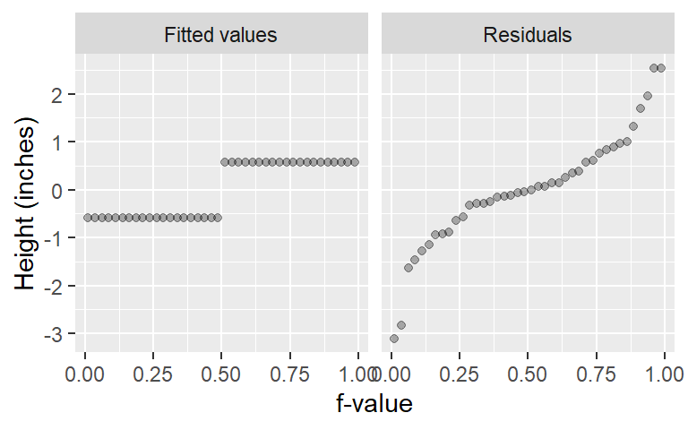
21.4 A Note on residual homogeneity
When comparing the spread of fitted values to the spread of residuals, we implicitly assume that the residuals have a similar distribution across all groups. The assumption of residual homogeneity ensures that the residuals represent a common source of unexplained variation. If residuals differ substantially in spread or shape across groups, it becomes difficult to interpret the comparison fairly. We explored the idea of residual homogeneity in the previous chapter, and it remains an important consideration when using both the vd and rfs plots.
21.5 Summary
This chapter introduced two powerful visual tools-the variability decomposition (vd) plot and the residual-fit spread (rfs) plot-for assessing how much of the total variation in a dataset is explained by a fitted model. You learned how to interpret these plots to evaluate model performance and residual behavior. These tools provide a bridge between exploratory visualization and formal modeling, helping to quantify what the model captures and what it misses.